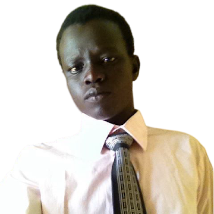

Welcome to Isaac Malou | WDD 130

My name is Isaac Chol Aguer Malou. I am originally from South Sudan and currently based in Kampala, Uganda. I am a student with BYU–Pathway Worldwide pursuing a Bachelor of Science in Software Development. I enjoy learning about web development and technology, and I hope to use these skills to build useful digital solutions for my community.